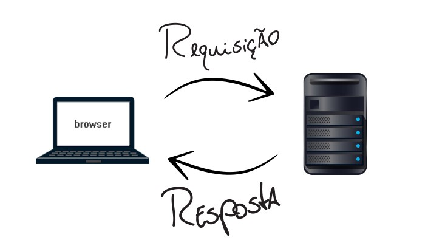

- Os termos Web e Internet frequentemente são usados como sinônimos.
Explique com suas palavras qual é a diferença entre Internet e Web?
A diferença é que: A internet, é uma rede que interliga vários computadores, Web é uma das ferramentas utilizadas para interpretar a comunicação entre estes computadores.
- O que acontece quando digitamos um endereço web na barra de navegação?
Explique de maneira sucinta o funcionamento do modelo cliente/servidor da
web. Para enriquecer sua resposta, adicione em sua explicação imagens
estáticas ou gifs animados, caso encontre.
Quando digitamos um um endereço web na barra de navegação, estamos indormando o endereço do site que desejamos acessar. O DNS por sua vez, converte o endereço informado para o endereço de IP do servidor e direciona os tipos de serviços desejados para as portas disponibilizadas. após essa interpretação, há uma solicitação por parte do cliente para acessar o endereço solicitado. Caso autorizado pelo servidor, inicia-se a transferencia de pacotes.

- Uma aplicação web é um "Software baseado nas tecnologias e nos padrões do
World Wide Web Consortium (W3C) que fornece recursos específicos através da
Web, como conteúdos e serviços, através de uma interface de usuário, o
navegador Web". De acordo com essa definição, responda: Web sites, sem
componentes de software, como páginas HTML estáticas, são consideradas
aplicações Web? Justifique.
Sim, são aplicações WEB, pois ainda que a requisição seja respondida ao usuário com uma página em HTML puro, o código, o endereço web, não está deixando de ser interpretado.
- O HTML ( hypertext markup language ) é uma linguagem de programação,
atualmente na versão 5, muito utilizada para ambientes desktop? Justifique.
HTML, Linguagem de Marcação de Hipertexto, não chega a ser uma linguagem de programação, é apenas um padrão de marcação, o HTML não é executável, ela necessita de um interpretador para ler suas marcações, e o interpretador é o próprio navegador.
- São tecnologias e padrões associados ao funcionamento da world wide web
(WWW), EXCETO:
A) HTTP
B) HTML
C) SQL
D) URL
- Um programa elaborado na linguagem HTML apresenta a seguinte linha:
<!DOCTYPE HTML> Sobre essa linha, é correto afirmar que ela:
A) Indica que o arquivo com o programa-fonte possui a extensão doc.
B) Deve vir sempre após a tag .
C) É uma tag que define o nome do arquivo que possui o programa.
D) Especifica ao navegador o tipo de documento HTML que ele vai
renderizar.
E) Não atende corretamente a linguagem HTML, que não aceita o símbolo !
em seus comandos.
- No HTML Tags são:
A) Comandos de linguagem de programação orientada a objetos.
B) Variáveis de tamanho fixo definidas internamente em um programa de
computador.
C) Códigos de formatação usados em documentos HTML para instruir o
browser sobre a forma de apresentação de textos e gráficos numa
home-page.
D) Comandos usados em um programa na linguagem Java para delimitar e
formatar seções internas.
E) Definem constantes de formatação que são usadas em linguagens tais
como PHP e JSP para que o browser entenda o significado de uma
expressão ou gráfico.
- O elemento CANVAS do HTML 5 é:
A)um sistema que define um mapa de imagem.
B)um sistema que permite ao autor especificar recursos de vídeo e áudio.
C)um sistema que se vale de um conjunto de navegações aninhadas em um documento html incorporado.
D)um sistema que faz transições de animação.
E)um sistema de elaboração de objetos gráficos geralmente em javascript que se utiliza de métodos para desenhar formas personalizadas.
- Um desenvolvedor web deseja fazer um glossário de termos em um site utilizando listas de definições do HTML5. Nestas listas, o termo a ser descrito e a descrição propriamente dita são criados, respectivamente, por quais tags? Escreva a definição das TAGs escolhidas e justifique seu uso neste cenário.
A)<dt> e <dd>
B)<dd> e <tt>
C)<ul> e <li>
D)<tt> e <dd>
E)<dd> e <dt>
- As tabelas são elementos muito utilizados na elaboração de páginas HTML. Listas de produtos e respectivos preços são exemplos de informações formatadas e apresentadas através de tabelas na Internet. As tags HTML utilizadas para criar, respectivamente, linhas e colunas em uma tabela são:
A)<br/> e </p>
B)<br/> e <em></em>
C)<em></em> e <tr></tr>
D)<tr></tr> e <td></td>
E)<td></td> e <tr></tr>
Gabarito
|
Questão 5 |
Questão 6 |
Questão 7 |
Questão 8 |
Questão 9 |
Questão 10 |
| A |
|
|
|
|
|
|
| B |
|
|
|
|
|
|
| C |
X |
|
X |
|
X |
|
| D |
|
X |
|
|
|
X |
| E |
|
|
|
X |
|
|